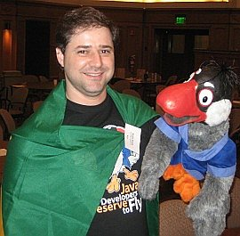
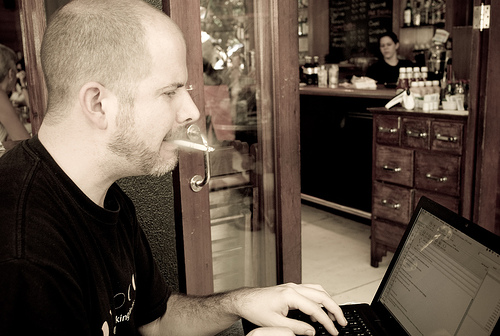

Evangelizing NetBeans often
meant lengthy trips to foreign
countries. Tim Boudreau made many of those trips, and one of his most
memorable was his first trip to Brazil, in which he describes: "In
2005, Charlie Hunt and I went to Brazil for the first time. We didn't
know just how last-minute some events are organized there. We'd been
told we would do a talk at an event on Thursday, and then deliver some
training the following week. I met Bruno Souza for the first time
before our talk.
"I asked him what we would be doing the following week. He said
'Oh, we don't have you scheduled for anything.' We were a bit upset,
thinking, we flew all the way to Brazil to give a 1/2 hour talk?! We
looked in to flying back after the weekend. On Monday morning, I wake
up in my hotel room to the phone ringing. It was Charlie: ''You're not
gonna' believe this. We're scheduled to do eight hours of training
today, eight more tomorrow, and eight more on Wednesday! We need to be
at the university in an hour.'
"We had nothing prepared, since we'd planned to use Friday through
Sunday to prepare for the following week, but held off after finding
out we weren't scheduled for anything. So, we got in a taxi with our
laptops and planned out the first day of training on the road to the
university. Then we tag-teamed for the next three days - one of us
would teach for an hour while the other invented the next hour of
training. It actually worked and we had fun doing it!" These days,
Tim's life is a bit less hectic as the Development lead for Java ME
tools.
Bruno's recollection of that trip is a bit different. He suspects a
mis-communication was responsible for Tim and Charlie initially
thinking that no event was scheduled. In any case, Bruno was
instrumental in many events, as he recalls: "Even before I joined the
NetBeans team, I worked together with the NetBeans Evangelists on
several tours to visit Java User Groups around Brazil, and it was
always a big hit with the developers, and lots of fun.
"But it was when I joined the team that we decided to do a tour of
four South American countries! We visited many cities doing a full day
of talks about open source, NetBeans, and OpenSolaris, and once went
from playing soccer in Uruguay (and losing badly) to eating loads of
meat and then rolling down sand dunes in Brazil. During those two
weeks, we had almost no sleep, and had to run after airplanes, buses,
and taxis because we were always late.
"I was also the group's camera man; I recorded all the details of a
particularly bad day, which eventually became a
funny video on NetBeans.tv. After all that, I got on a plane and went to
Russia to meet more developers. That was a crazy, memorable couple of
weeks!" Bruno is still active in the open source world, working in a
group at Sun that does worldwide open source community gardening:
"helping open source communities grow and bloom." |

Bruno
Souza

|